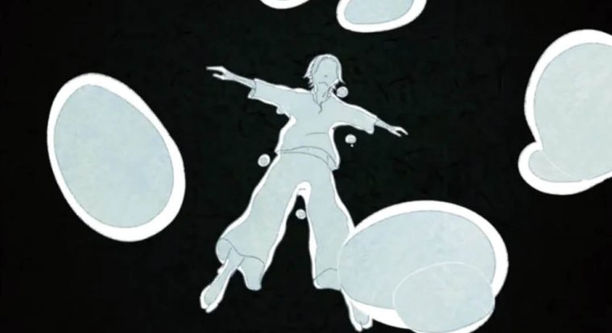
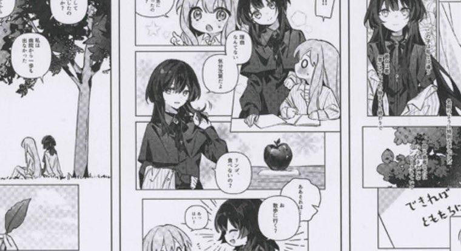
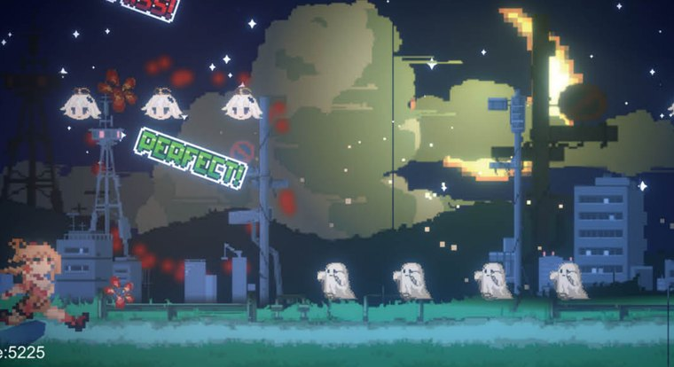
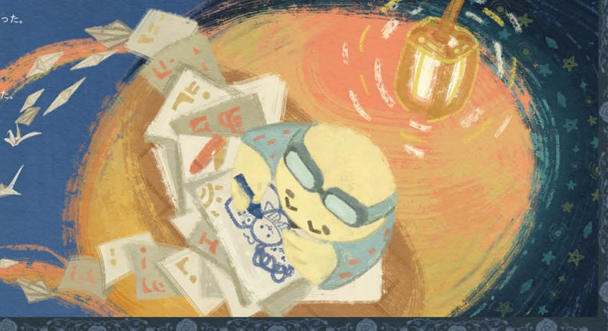
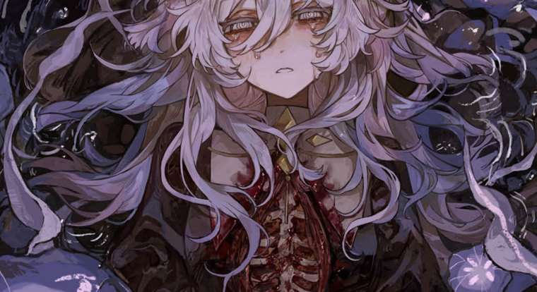
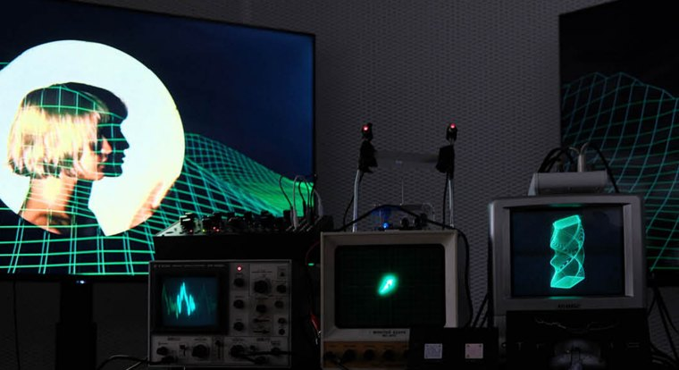
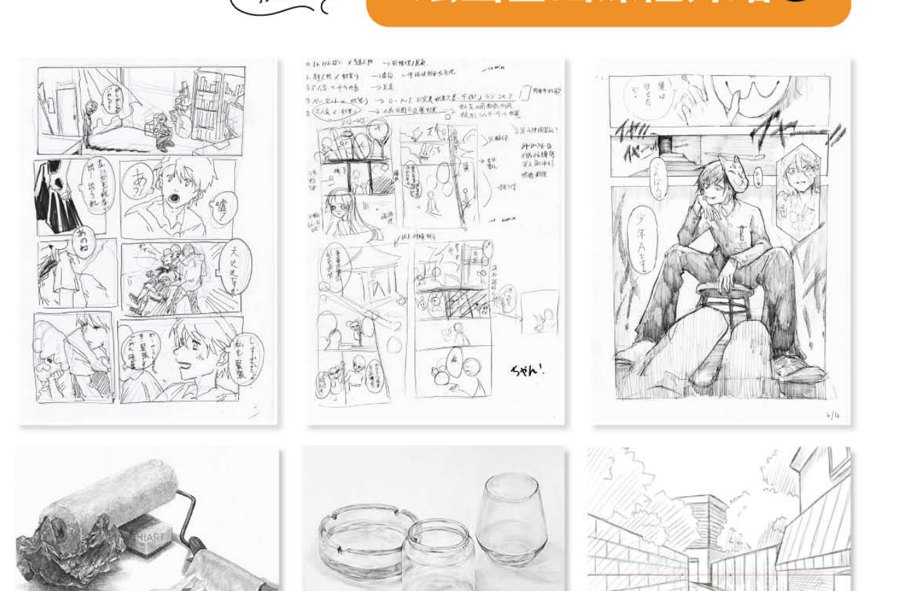
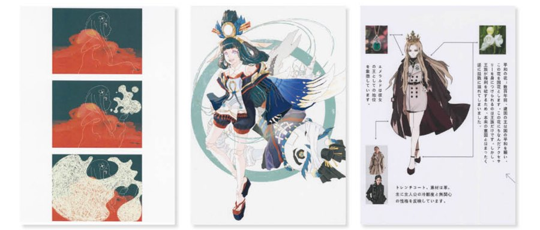

CHIART ACG｜Anime・Comic・Game
ACGの「原産地」、日本で。
ACGの「原産地」、日本で。
創り手になるための専門課程。
世界の二次元ヒットIPの80%以上が日本発。アニメ・漫画・ゲーム・イラスト・キャラクターデザインまで、産業に直結したカリキュラムと、日本一線の美大出身講師陣で、創作と進学の両方を支援します。
ACGについて相談する世界の二次元ヒットIPの80%以上が日本発。アニメ・漫画・ゲーム・イラスト・キャラクターデザインまで、産業に直結したカリキュラムと、日本一線の美大出身講師陣で、創作と進学の両方を支援します。
ACGについて相談する中国のACGユーザーは5億超・市場規模2,700億元。一方で、世界に通用する「創り手」は今なお不足しています。
『鬼滅の刃』『ONE PIECE』『ポケモン』など、世界の二次元ヒットIPの80%以上が日本発。日本はACG産業の「原産地」です。
出典：JETRO『コンテンツ産業データ集2024』
大学・専門学校が、アニメ・漫画・ゲーム・キャラクターデザイン・イラストを網羅した世界有数のカリキュラムを整備。業界の現場に直結しています。
2024年のACG関連産業の就職率は94.3%。AI・クロスメディア・海外市場の拡大で、人材需要はさらに高まっています。
出典：文化庁『文化産業白書2024』
中国はユーザー規模で世界最大級。日中の文化を双方向に発信できる複合型クリエイターは希少で、帰国就職も有望なキャリアパスです。
志望と適性に合わせて、専攻方向ごとに合格と作品づくりを指導。各方向の主な進学先と就職率の目安です。

就職率 97.3%
就職率 93.7%
就職率 92.1%
就職率 91.9%
就職率 92.5%
就職率 92.8%※ 就職率は各学科方向の業界目安。作品は在校生・修了生のものより掲載（氏名は非掲載）。
アニメ制作・ゲーム開発・出版・広告・クリエイティブから、原創IP・VTuber・新メディアまで。日中の主要企業が活躍の舞台です。
※ ACG産業の代表的な就職・活躍先の企業例です。
関西帯同受験・オープンキャンパス帯同・各大学の公式説明会・充実した過去問題庫で、校考対策を徹底します。
アニメ・漫画の遊学、ACGワークショップ、漫画展への出展、アニメ会社見学など、現場で実践経験を積みます。
Copic公式などのコンテスト参加、作品発表・プロモーション、展示機会で、未来のアーティストとしての実績を築きます。
「ゼロから基礎を固める」段階から、「自分だけの作品集を完成させる」段階まで。創作力と表現力を体系的に伸ばします。

人物造型・色彩・場景構成などの専門知識を体系的に学び、「愛好者」から「専門学習」へと進むための土台を築きます。

完成した個人オリジナル作品集の産出を目標に、創作の全工程をガイド。世界観・キャラクター・物語を一つの作品へと落とし込みます。
技法の完成度だけでなく「自分の考えを表現できるか」を問う近年の入試。両方式に合わせて対策します。
実際の授業に参加し、制作・討論・発表を通じて選考。学科の雰囲気を体感しながら、表現力・思考力を総合的に評価される、双方向型の入試です。
素描実技＋作品集＋面接の3本柱。基礎デッサン、創作思考を形にする作品集づくり、専攻理解を整理する面接対策を段階的に積み上げます。
純芸術・デザイン・映像・服飾まで含む知日美術（CHIART）全体の合格実績・指導内容はこちら。